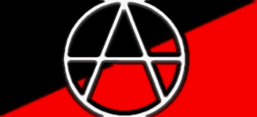

ELA
NÃO QUER, QUE VOCÊ VIVA!!!
___Um mundo de
sonhos é o que ela te passa, um mundo de sonhos consumista e
alienante, que te torna um ser humano apático, sem vontade
própria, tudo o que você veste, come, lê e pensa, vem
dela, você não é mais dono de si, tudo o que você tinha
de bom foi tomado, a sua vida, já não é mais sua, tudo o
que você é hoje em dia, você deve a ela, tudo o que ela
produz você consome e tudo o que ela produz é previamente
preparado para te alienar e no final ela sempre consegue te
consumir, você não vê mais os outros pelo o que eles são
realmente, tudo o que você vê são objetos, os outros não
passam de produtos, você só vê a plástica, só vê o
tênis de marca, a roupa de marca e além disso você só
será considerado se tiver isso, se você não tiver o que
ela te obriga a consumir, você não é nada, coma um Mc
lanche feliz ou seja engolido pela tristeza e se você não
tem dinheiro para isso? tá fudido, já era.
___Então você
procura trabalhar, para poder viver a vida que ela te impõe,
então você pega e trabalha que nem um cão para ganhar um
salário de merda e poder ir nos finais de semana ao shopping
center do momento e quando você chega lá, você se depara
com aquele mundo de sonhos que ela te passou ao longo dos
anos e ele está lá, ao vivo e a cores, se tornou realidade,
tudo é bonito, tudo é brilhante, tudo é super legal,
algumas pessoas comem Mc lanches felizes e bebem Coca-Cola,
outras compram produtos de extrema necessidade "Poxa, o
que seria de mim, sem um tênis da nike, sem uma calça da
fórum?" e você vai vendo nos rostos das pessoas como
elas estão felizes, como aquilo tudo é maravilhoso, você
enxerga nelas aqueles sorrisos colgate, mas vê
estranhamente, que todos aqueles mesmos sorrisos se encontram
amarelados, aí você para um pouco, pensa e corre para o
banheiro, então se olha no espelho e abre um sorriso, já
não é sua surpresa, quando se depara com seu sorriso
também amarelado, então você pensa nisso tudo e fatalmente
acaba por se lembrar dela, poxa, lá naquele mundo todos
tinham sorriso colgate, era um sorriso lindo, branquinho.
___Pois é...
num segundo, aquele mundo de sonhos se torna um pesadelo e
você percebe então que tudo o que ela te passava era falso,
fútil e mentiroso, você então começa a ver, que não
precisa comer um Mc lanche feliz para ser feliz, que não
precisa ter um tênis da nike para caminhar e principalmente
que não precisa daquele mundo de sonhos para viver, então
você caiu na real e viu que tudo aquilo não passa de uma
mentira e que todas aquelas pessoas no shopping não passam
de seres que consumidos por ela continuam a sonhar, mas que
um dia acabarão por acordar e assim perceberão que ela, a
mídia, não passa de um conto de fadas, ou seja, não passa
de algo criado pelos poderosos, para te alienar, te consumir,
te dominar e roubar sua vida.
Alguém - R.A.I.A.R.

"Por
um mundo, onde caibam, vários mundos"